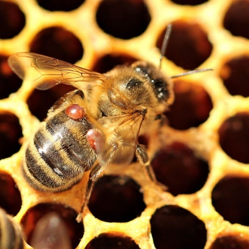

Exploring declining honeybee populations and potential causes
Apis mellifera, the Western honeybee, has a long history of domestication and has played a vital role in
not only the production of honey, wax, and other commodities but also pollination. This benefit alone places honeybees, along with
other pollinators, in a position of paramount importance for agriculture. Many farmers in the U.S. make use of honeybees for controlled pollination of
certain crops like almonds, apples and blueberries, but their presence anywhere benefits local flora. A 2012 Cornell study estimated that the western honey bee alone contributes
over $15 billion USD to crop value in just the United States1.
Despite these impressive estimates, honeybees are vulnerable and suffering in recent years.
Visualizing the Consequences of Colony Collapse
Each hexagon below represents about 15,000 beehives. Click the start button to see how bee colony loss, represented as the hexagons
turning to gray, could affect United States agricultural production.
Defining Colony Collapse Disorder
An enigmatic epidemic
Colony collapse disorder, or CCD, is a peculiar phenomenon where the able-bodied worker bees of the hive suddenly vanish,
leaving behind their queen and several nurse bees, immature larva, and their food stores. A colony left in this state cannot persist; without a substantial
population to forage and maintain the hive, recovery is almost certainly impossible. Every beekeeper will encounter colony loss at some point, be it from
pests, disease or a poor foraging season; what makes CCD unique is the bizarre set of symptoms associated with it, including abandonment of the queen and
an unwillingness for members of the colony to consume additional food a beekeeper may try to provide.
Since the mid 2000s, CCD has become an epidemic. In the United States, hobbyist beekeepers and commercial operations alike consistently report losing over 30% of their colonies3,
with some apiaries losing half or more of their population over a single winter. Smaller but still substantial numbers emerged from other parts of the world including Canada and the United States, Europe, South and Central America and Asia.
Beekeepers normally expect 15-20% colony loss over the winter, but around this time that number doubled4. In recent years, due diligence has lead to slightly more tolerable percentages
of colony loss, yet the problem continues to persist and normal loss rates have not yet returned.
A healthy frame of honeybees.
CCD hives often leave behind food stores.
Sudden population disappearance is a heartbreaking occurrence for beekeepers.
The map shows the percentage of colonies lost in the selected time frame, state by state. The flower shows the portion of those colonies that were in each US Census division. Mouse over each for more information!
National Honey Production Over Time
Evidence of change
Evidence of honeybee population loss can be seen in annual U.S. production of honey. Even with standard yearly
variation in yield, there is an evident slight downwards trend. Use the timeline below the chart to focus in on
a particular time period.
CCD Causes
Examining candidates
Since the earliest reports of CCD, beekeepers and scientists alike have put forward a number of hypotheses
about its cause. Currently we recognize that CCD is a complex issue that cannot be directly attributed to a single cause,
but there are a number that are more plausible and empirically supported than others. Click the boxes to the left to read
more about individual causes.
The usage of a certain class of insecticides known as neonicotinoids is one of the most widely-suspected contributors to CCD. Chemically,
these compounds resemble the naturally-occurring nicotine. Though most commonly known for its human consumption, nicotene is
an antiherbivory defense employed by various plants. Favored for their lessened toxicity to mammals and birds, neonicotinoids include some of the
most widely used pesticides in recent decades. Usage of these compounds boomed in the United States beginning in the early 2000's, peaking at around
the time Colony Collapse Disorder came to public attention.
These insecticides are not without their cost. Laboratory studies have shown that neonicotinoids negatively affect honeybee health; even sublethal levels
have been shown to damage honeybee navigation ability and memory5, two critically important traits for foraging bees. These results have long been contested, in particular
by industry giants backing usage of the pesticides. Fortunately, in recent years numerous governments have found their usage unacceptable. Limitations on their usage have been
in place since the early 2010's, with more groups outright banning their usage including the European Union in 2018. There is insufficient data to draw a meaningful conclusion,
but there has been a slight rebound in honeybee population in the past several years. Whether or not this is due to bans or better beekeeping practices remains to be seen.
A New Threat
Varroa destructor
A female Varroa mite.

Mites infest both brood and adult bees.
When mites feed on larvae, the bees often have developmental issues.
Neonicotinoids are not the sole cause of collapsing honeybee populations. A species of parasitic mites known as Varroa destructor
have become an epidemic as well, present in nearly every part of the world except for Australia and some islands. Varroa mites enter bee colonies,
attach themselves to the bees and feed on hemolymph, the invertebrate equivalent of blood. Depending on the stage of their life cycle,
these mites target both adult bees and developing larvae and pupae. This consumption weakens bees and leaves them with a shorter lifespan, behavioral difficulties
involving pathing to and from the hive, and other developmental issues such as useless wings caused by various diseases the mites carry.
Historically, treatments against the mites have worked well, but almost every treatment incurs the risk of future resistance as mites that survive the treatments
reproduce. This rapid adaptation has made varroa mites nearly immune to conventional strategies, and today beekeepers employ a range of partially effective measures including
formic and oxalic acid treatments, essential oils, and even intentionally killing male bee brood which the mites have a preference for. Effort into breeding mite-resistant bees is
ongoing and promising, but in the meantime these parasites continue to ravage honeybee colonies worldwide.
Conclusions
Looking at the future
The evidence is indisputable; honeybee populations have seen decline in recent years as a result of growing threats.
Fortunately, some of these we can directly control. There is significant evidence to support the idea that
recent pesticide usage is harmful to bees and governments that ban their usage are responsible for the slight rebound
in the past few years. Despite this, colony collapse is a synthesis of complicated issues that, while we may have contributed
to, we cannot as easily undo. The adaptation of varroa mites is a prime example of such a threat. Our practices and lack of
scientifically-backed foresight has bred a parasite so resilient our best hope is to help bees beat them in an evolutionary
race.
These goals are lofty even for the most well-funded governments and knowledgeable scientists, so what can a single person do?
Thankfully, it is highly doubtful that honeybees will disappear altogether, but maintaining the current population levels
requires diligent work by new and old beekeepers alike. Hobbyist level beekeeping is both affordable and approachable for those
with the space to house a colony, even if this is a small backyard or an urban rooftop. Every beekeeper makes an inherit contribution
towards the preservation of these crucial pollinators, whether or not it is out of a love of nature or commercial interests. This is not
the only way to help bees, either. Planting any scale pollinator garden, comprised of flowering plants that bloom throughout the warmer
months, helps feed the hives of foragers and aid them in surviving through the winter despite population loss due to cold or mites.
Perhaps the most general aid we can give is through spreading awareness. We are often forgetful that we are not only a part of the
global ecosystem, but a significant portion at that. Many of our actions are followed by consequences, both forseen and not. Making positive
impacts and limiting damage requires active consciousness of practices and learning from mistakes. So long as we do this, we have the
power to benefit our natural world.
Project by Jack Deschler, Leyla Brittan, Caroline Gutierrez, and Michael Scott.
References:
Calderone NW (2012) Insect Pollinated Crops, Insect Pollinators and US Agriculture: Trend Analysis of Aggregate Data for the Period 1992–2009. PLOS ONE 7(5): e37235.
Morse, Roger A. and Calderone, Nicholas W. "The Value of Honey Bees As Pollinators of U.S. Crops in 2000."
Bee Culture, March 2000.
The White House. “Fact Sheet: The Economic Challenge Posed by Declining Pollinator Populations.” National Archives and Records Administration, 20 June 2014.
Johnson, Renée. "Honey Bee Colony Collapse Disorder." CRS Report for Congress, 7 January 2010.
Desneux N, Decourtye A, Delpuech JM (2007). "The sublethal effects of pesticides on beneficial arthropods". Annual Review of Entomology. 52: 81–106.